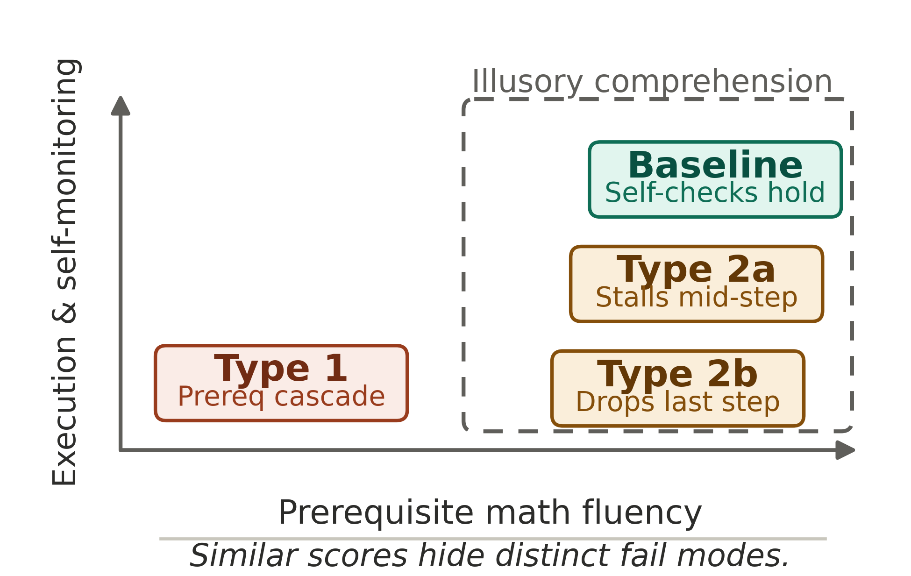
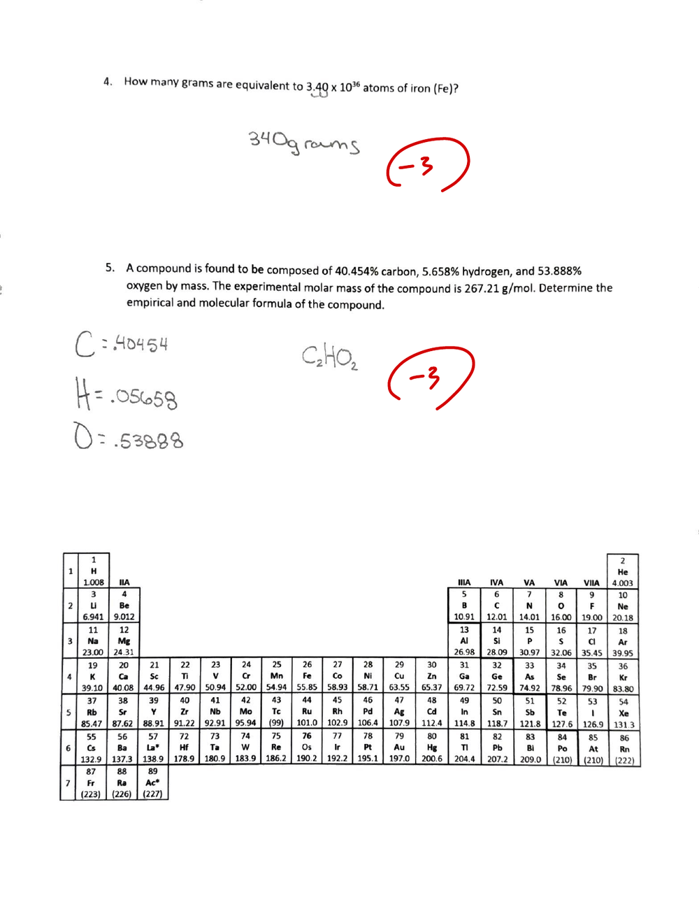
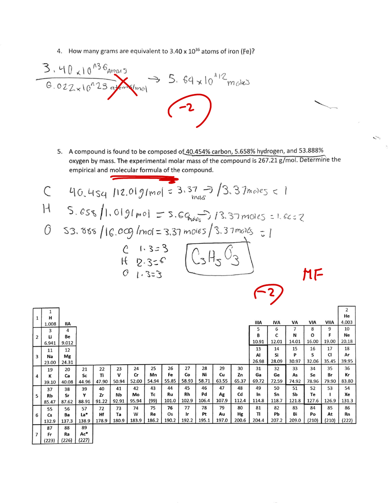

Math Readiness Initiative
Where the Calculation Breaks: Four Failure Patterns in Introductory Chemistry Problem Solving
Referred to throughout this portfolio as the Math Readiness Initiative.
Placement policy and the classroom it produced
California's AB 705 (2017) substantially restricted placement assessment and enforced prerequisites at community colleges; AB 1705 (2022) further limited remedial coursework before transfer-level enrollment. As a result, a single section of CHEM V101 now enrolls students whose mathematical preparation runs from full arithmetic fluency to foundational arithmetic gaps, a population that prior policy would have partitioned across several course levels.
In class, students now stop before the chemistry begins, at a fraction, a ratio, or a unit conversion the course has always been able to assume. Across those years math readiness came up in chemistry department meetings again and again, and the concern kept growing.
The change is structural, and the teaching methods of the previous decade were not designed for it.
Analysis at a finer resolution
"My students are weak at math" was too abstract for me to act on, and so was a course pass rate. I wanted the problem at a resolution where I could see which students break, where in a problem they break, and whether two students with the same score are failing the same way.
The material to look that closely was already mine. I record every lecture through Zoom and it transcribes automatically, so by 2026 I had more than a year of lecture text. Quizzes and assignments are scanned and submitted digitally through Canvas, which had accumulated into several years of student written work. Both had only been stored, because reading that volume by hand would take more time than a teaching load leaves. An analysis tool that applies the same rubric consistently across all of it is what made the closer look possible.
Method
The chapter-by-chapter demand map. Before looking at student work I went through my own lecture materials chapter by chapter and wrote down the specific operations each one requires a student to compute. That inventory, across CHEM V101 chapters 1 through 12, produced a set of six skills the course keeps asking for, which I then reviewed and fixed as the working list.
| Core skill | Where CHEM V101 asks for it |
|---|---|
| Dimensional analysis | Ch 2 (metric), Ch 6 (g ↔ mol), Ch 8 (stoichiometry), Ch 11 (gas stoichiometry), Ch 12 (heat) |
| Proportional reasoning | Ch 2 (density), Ch 6 (percent, mol), Ch 8 (stoichiometric ratio) |
| Scientific notation | Ch 2 (introduction), Ch 6 (Avogadro's number), Ch 9 (wavelength calculation) |
| Algebraic rearrangement | Ch 7 (oxidation number), Ch 11 (PV = nRT), Ch 12 (Q = mcΔT) |
| Understanding percent | Ch 6 (percent composition), Ch 8 (percent yield), Ch 11 (partial pressure) |
| Multi-step decomposition | Ch 6 (empirical → molecular), Ch 8 (stoichiometry), Ch 12 (heating and phase change) |
In the right-hand column the same few skills reappear under different chemistry headings. A student who is shaky in one of them meets it again every few weeks in a different chapter.
Coding the student work. This analysis was prepared as material for a chemistry department meeting on math preparation in May 2026, on records from my own course; the manuscript came out of it afterward. Spring 2024, CHEM V101, a single section: 54 students, with the full written-work archive across six assessment assemblies. Every response is sorted into five categories (correct; magnitude or unit error; partial execution; no work shown; setup only), and what identifies a student is the pattern across their responses rather than any single score. I wrote the five-category codebook; a language model applied it to each exam and proposed a first-pass type along with its reasoning; I reviewed every classification and held final say. The model applies my codebook at a scale one instructor cannot reach by hand. The name area on each scan was blacked out before any file was processed, so no student's name reached the model.
Four students read in depth. The initial intent was to code all 54 for population-level statistics. Four students were read in depth instead, across multiple assessments. They were chosen from the gradebook before any written work was opened: one from each band of the score distribution, top to bottom, with attention to how each student's scores moved from one exam to the next. Sampling across the whole distribution kept the low end of the class from defining the framework. The working frame at that point was a two-way split between a skill gap and a processing gap. The four types came out of the readings afterward, and the division inside Type 2 appeared only while those readings were under way. Of the other 50 students, the 48 whose Exam 2 free response was on file were then coded on that single assessment to see whether the same types recurred. Types 1 and 2a did. Type 2b produced no instances in that pass, which is a limit on how far the framework has been confirmed and one of the things a larger collection is meant to settle.
Reading the lectures against the types. Once the types existed, I checked whether my own lectures reach each of them. Twenty-one lecture sessions from Spring 2026 were transcribed and read along seven observation dimensions drawn from the same framework, among them whether steps are named and carried values verified, whether problem categories are identified before procedures run, and how much of the session is student work time.
The rubric is built to surface shortfalls, so a dimension that comes back as reached is a minimum. The lectures were also designed before the types existed, which keeps the exercise from grading a lesson against the framework it was built from.
Findings
The course asks for three different things.
| Layer | What it is |
|---|---|
| A · Prerequisite arithmetic | Fractions, ratios, proportional reasoning, unit conversion — the layer AB 705/1705 most directly affects. |
| B · Math in chemistry context | Stoichiometric ratios, dimensional analysis as structure, formula rearrangement. |
| C · Multi-step execution | Tracking intermediate values across a problem chain. |
Students break at four different places. Each type is defined by where in the chain the breakdown occurs, rather than by the score it produces.

| Type | Failure locus | Risk of illusory comprehension | Instructional lever |
|---|---|---|---|
| Type 1 · Arithmetic Gap | Layer A is not automatic. Arithmetic consumes working memory before the chemistry arrives — a cognitive-load cascade upstream of the chemistry itself. | High | Automaticity training (Cover-Copy-Compare); reduce working-memory load before the chemistry starts. |
| Type 2a · Monitoring Gap | Layers A and B hold. Execution collapses between steps in Layer C: intermediate values are lost as the chain lengthens. | Moderate | Visual roadmap and scaffolding with explicit carry-over verification. |
| Type 2b · Transfer Gap | Layer B is intact within a familiar problem category. Under a novel context the retrieval cue fails before the math begins. | Low | Interleaved practice, plus a final-step metacognitive prompt. |
| Baseline · Fluent Learner | The chain completes. A framework has to account for who is underserved at the top as well as who is failed at the bottom. | Low | Peer-led structure and verbalization: the fluent student as explainer, not recipient. |
Illusory comprehension (following a worked example and taking that for the ability to execute one) is the third column of the table. It runs across all four types and raises the cost of each, and it is highest where the arithmetic itself is still expensive.
The table is a second version. The one I presented to the department in May 2026 sorted each type by which layer was the problem. Reading more cases made a finer question answerable: which layers hold, and where the chain breaks. Type 2b moved the most. It first looked like a collapse in multi-step execution, and the later readings showed a retrieval failure with the chemistry-context math intact, which is what separates it from Types 1 and 2a. Colleagues who saw the May slides will find the assignments above differ from them for that reason.
Every lever in that last column comes from existing research. What the analysis adds is which one to reach for, because the four types respond to different ones.
One quiz, two students, opposite patterns. The clearest case in the Spring 2024 archive is a single Chapter 6 quiz (percent composition, moles, empirical and molecular formula). Two students scored 11 out of 20 and 15 out of 20: close enough that a gradebook groups them together and gives them the same advice.

The first student answers in bare numbers. On the reverse-percent item the setup is right and the result is off by a factor of one hundred; on the Avogadro items the units stay in grams where the question asked for molecules; on the last item a formula appears with none of the steps that would produce it. The tools this student needs (dimensional analysis, scientific notation, percent run backwards) are prerequisites the chemistry depends on (Type 1).

The second student's work is visible from beginning to almost-end. The molar-mass divisions, the normalisation, the multiplication to whole numbers are all on the page, and the empirical formula is correct. The molecular formula step is missing. The same thing happens on the Avogadro item: the conversion is set up correctly, the arrow to the final unit is not drawn. The mathematics is in place; what is missing is a structure that forces the last step (Type 2b).
The two students took the same quiz, earned adjacent scores, and need different help, which is why I sort by failure locus instead of by score.
A lesson can be well taught and still not reach a given student. Reading the transcripts showed that breaking a problem into labeled steps and checking the carried value at each one (what the literature calls step-labeling scaffolding) is something I do often and do at high fidelity. That is the right move for the student who holds the chemistry but loses intermediate values as a problem lengthens (Type 2a). The same transcripts show a gap at the other end: the fluent student who learns most by explaining to a peer gets few openings to do it. Both readings come from my own lectures, and what they measure is whether the mechanism a student needs was present, which is a separate question from how well the hour was taught.
Journal submission
By 2026 the material had accumulated into something already shaped like research (a documented framework, a codebook, a classifier, supporting materials), and I decided to develop it into a paper. A manuscript went to the Journal of Chemical Education on June 25, 2026 and was rejected on August 10.
The rejection came on three grounds, and two of them are about the study. The first, the editor's primary one, was scope against evidence: a single manuscript proposed a classification framework, argued its validity, drew instructional implications and recommended interventions, while the framework itself came from a small number of cases. The second followed from it: intervention effects belong in a study of their own, and a resubmission should concentrate on the empirical validity of the framework: more data, the coding process documented, inter-rater agreement, the instructional implications lowered from conclusions to hypotheses. The third was institutional: ethical approval and participant consent had to be addressed. The work had been conducted as ordinary analysis of my own teaching, without the approval structure that publication requires. I paused the research the same evening.
The preparation already under way. A second study, a fall collection with consent, had been in preparation since spring, and it needed a review board. In late May I wrote to the IRB at California State University Channel Islands, which replied that it could not review external researchers without a formal agreement between the two institutions. In July I took the study to an independent review board, Solutions IRB, completed the human-subjects training it recommended, and wrote what a submission requires: a study protocol, a consent form, parental permission and assent forms, recruitment materials, and a syllabus statement. The application was assembled and had not been submitted when the research paused.
The college's review procedure. Ventura College has no Institutional Review Board, and when I brought the question to the Dean of Institutional Effectiveness, what came back was that faculty research with district students had essentially not happened outside doctoral programs. There was no established route to point me down, because nobody had needed one yet.
We met on August 12, 2026 and settled four things: the research is paused; analyzing my own teaching and sharing it within my department remains ordinary instructional work; any future publication route requires a written proposal with consent and permission materials, approved before anything begins; and the Dean would assemble a process checklist for conducting research with district students, run it past the deans, and publish it.
On August 31, 2026 that checklist was published. It is on the college website, and its first lines state the position plainly:
Faculty, staff, and/or external groups who wish to conduct research on VC students or employees must receive campus approval prior to collecting data. Ventura College does not have an Institutional Review Board (IRB). Thus, as part of this process, approval must be obtained from an accredited external IRB.
It then sets out seven requirements: federal human-subjects training and FERPA training, both within two years; an executive sponsor at dean level or above who agrees the work benefits Ventura College students or employees; approval from an accredited external IRB, with conditional campus approval available when the external board wants to see campus approval first; submission of the completed forms to the Dean of Institutional Effectiveness; that Dean's approval; and review by the college's Executive Team.
I am its first user. The human-subjects training I had completed in July turned out to be a different course from the one the checklist names, so in September 2026 I completed the one it names, along with the FERPA training. The executive sponsor is the requirement still open. The collection this project needs is designed around the rejection's main objection — Spring and Fall 2027 rather than a single term, a sample several times larger, and inter-rater reliability built in from the start, with Crystal Serrano as independent co-rater. Students write a study code, not their name, on the pages that get scanned, so the files that are processed carry no names.
The procedure was not on the college website in August; it is there now, and the next faculty member can follow it.
Fall 2026 implementation and current status
The four types are what this fall's CHEM V101 is built around. Five interventions sit in specific chapters, each attached to the students it is meant to reach: an automaticity warm-up for the student whose arithmetic still costs attention; a three-step check on units, significant figures and plausibility; a mole-map scaffold; interleaved retrieval practice for the student who can do the math inside a familiar problem and stalls when the context changes; and a peer teach-back, placed in the chapters where explaining carries the concept, for the fluent student who learns by teaching.
The record of what happened on a given day comes from the recording rather than from memory. A codebook sets what counts as an intervention having run, and it asks for a verbatim line from the transcript as the evidence. Each session's entry notes what was planned, what ran, how continuous the recording was, and what I promised students I would do.
The record also showed that the peer teach-back happens when a practice block opens, which is different from where I had placed it on paper. On the days a problem set opened, it happened; on the days it was scheduled inside a lecture segment, there was no opening for it.
The course runs twice each term, in a full-term section and a later-starting one, which makes the second run a place to change one thing deliberately. I write those change plans before the class. The first of them concerns a control variable: in the full-term run it was excluded from both lecture and practice quiz; in the later run it is taught and the quiz is announced in advance.
One limit is built into the record. The lecture captions label every line as the instructor, so student talk the microphone picks up cannot be told apart from mine. What students said during a peer teach-back cannot be recovered from these recordings, and a day with no entry means the recording does not show it.
As of now the manuscript is not under review anywhere and no resubmission is in progress. The pause lifted on August 31, when the college published the procedure; what remains is the approval itself, and the open gate is the executive sponsor. Data collection is scheduled for Spring 2027 and Fall 2027.